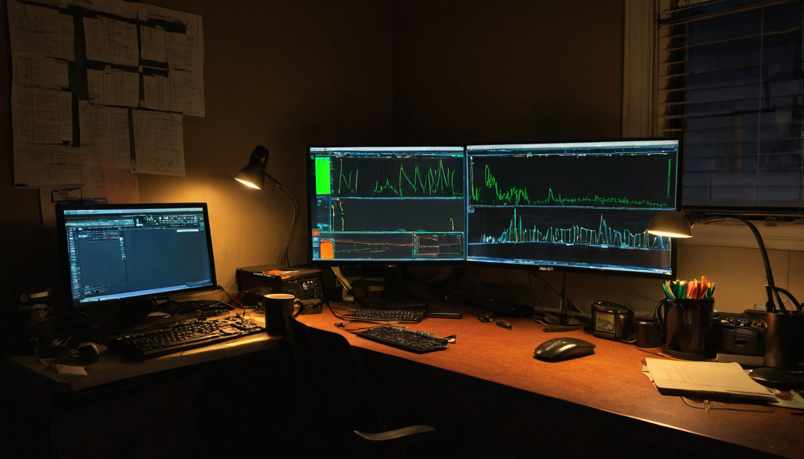
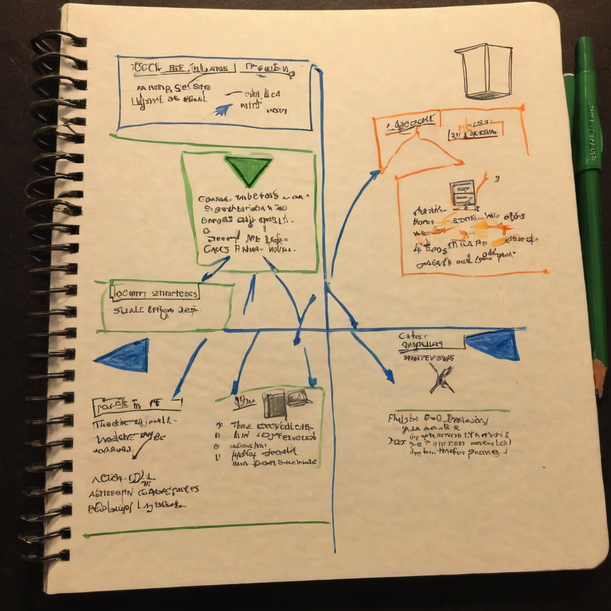

I like it when a Chia community account posts about where the money actually went, not just where it was supposed to go. @_Ghost_Friend's update stopped me mid-scroll because it had a small twist buried in the middle of a string of numbers, and that twist is more interesting than the numbers themselves.
@_Ghost_Friend posted an update on some Chia (XCH) treasury activity. The short version: 33 XCH landed in what the post calls the Wizard treasury. A separate 33 XCH that was originally headed to a group called Tang Gang did not go out as a simple payout. Instead of handing over funds when asked for a vault address, that group chose to put the amount toward more liquidity pool (LP) contributions instead. On top of that, the post says 331 XCH and 30 million of a token called $BITCOIN were taken from the @CatNetworkIndex treasury and paired, which reads like an LP position being built or added to. Two images are attached to the original post that likely show the wallet or transaction details. I have not been able to verify what is in those images, so treat the specifics as what the post claims until someone checks the chain directly.

Chia's CAT token ecosystem has a handful of community-run treasuries that move real value around in public, on request, in front of everyone. That is not nothing. Most crypto treasury drama happens behind closed doors or gets explained after the fact with a vague blog post. Here you have a group being asked for a payout address and choosing, in the open, to redirect that value into liquidity instead. That is a small but real example of a decentralized group making a capital efficiency decision instead of just taking the check.
What it does: moves XCH and CAT tokens between community treasuries and, in at least one case, into a liquidity pool position instead of a straight transfer.
Who it helps: the LP itself benefits from deeper liquidity, and the groups involved presumably get some ongoing yield or trading benefit instead of a one-time payout.
Why people in the Chia ecosystem should care: it is a live example of how these community-held funds actually get managed, negotiated, and reallocated, which is useful context if you are trying to understand how CAT projects handle shared treasuries.
What still needs work: the post is dense with shorthand. Wizard, Tang Gang, vault addy, these all assume the reader already knows who is who. Without more documentation from the groups themselves, it is hard for someone outside the loop to fully map the governance process behind these decisions.
What I would test first: pull up the two attached images and cross check the actual transactions on a Chia block explorer before treating any of the specific numbers as confirmed.
Where this could go: if redirecting a planned payout into LP becomes a normal move for these groups, it is a decent small case study in decentralized treasuries choosing to stay productive with capital rather than just spending it down.
I like this kind of post honestly. It is messy, it uses shorthand I do not fully follow, and I still think it is a good sign. A community group got asked for a payout address and decided, on their own, to put the funds into liquidity instead. That is the kind of decision-making I want to see more of in this ecosystem, people treating shared treasuries like something to manage well, not just cash out. The one thing I would want before repeating any of these numbers as fact is a look at the actual chain data behind the images, since the post alone does not give me enough to independently confirm the amounts. But the behavior described here, choosing LP over a quick handoff, is the part worth paying attention to.
I would keep an eye on whether $BITCOIN and this LP position show up again in future updates from these accounts, whether Wizard or Tang Gang publish anything explaining their process, and whether other CAT-token treasuries in the Chia ecosystem start following a similar playbook of redirecting payouts into liquidity instead of straight transfers.
Source: X post by @_Ghost_Friend, https://x.com/i/web/status/2077863245696717105, retrieved on 2026-07-16. External references: none beyond the two images attached to the original post.